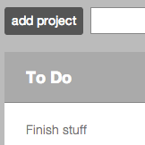
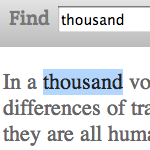
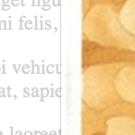

|  |
ThreeDoI wrote this as a demo application using Backbone.js. It's got a few more rules than your basic to-do: tasks in the To Do column can't be dragged straight to Done without a stop in In Progress. source |
|  |
JS FindWritten as a mobile-friendly exercise, this toolbar emulates the Find on Page... tool in Firefox. source |
|  |
Hatbox(a mobile image lightbox)Another exercise in JavaScript plugins made to be friendly to mobile devices: a simple image slideshow that cycles through all images on a page. source |